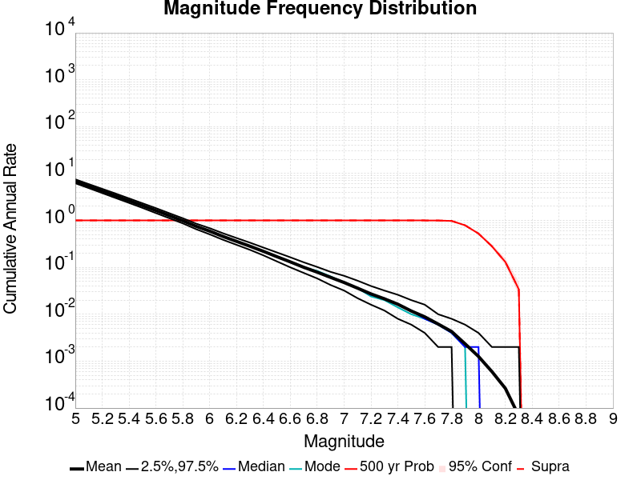
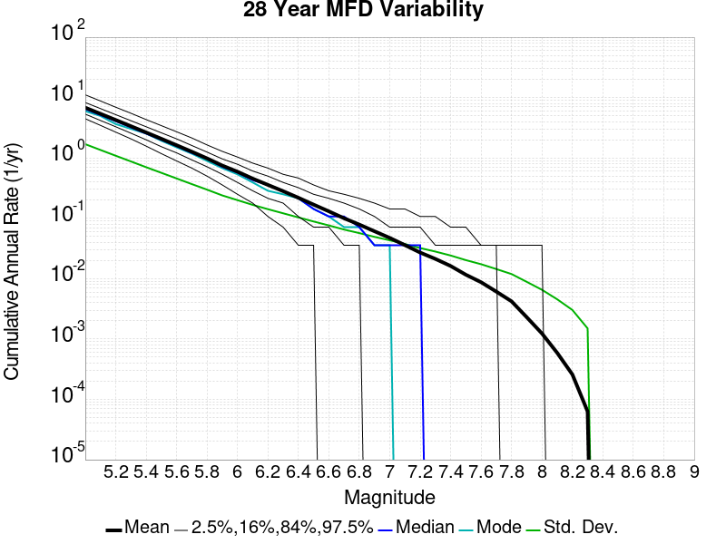
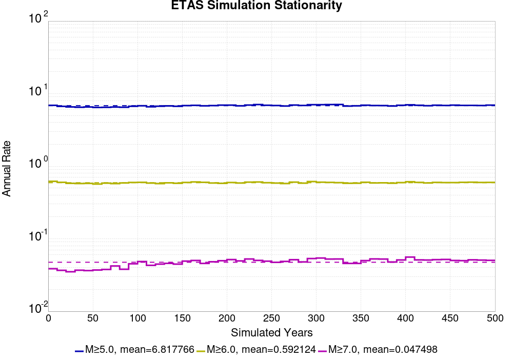
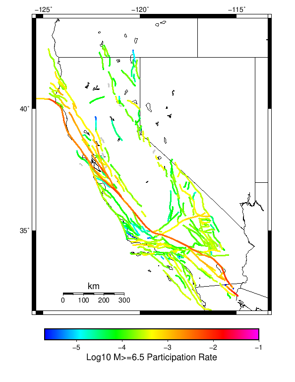
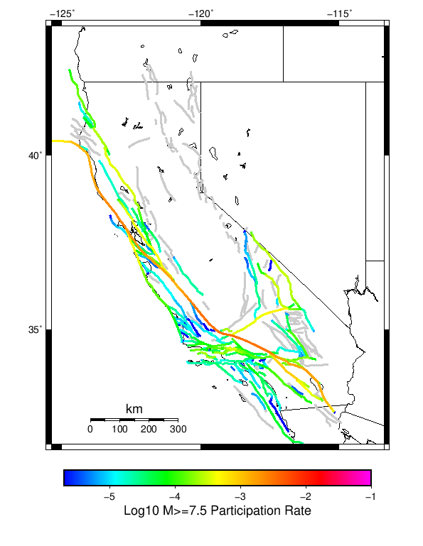
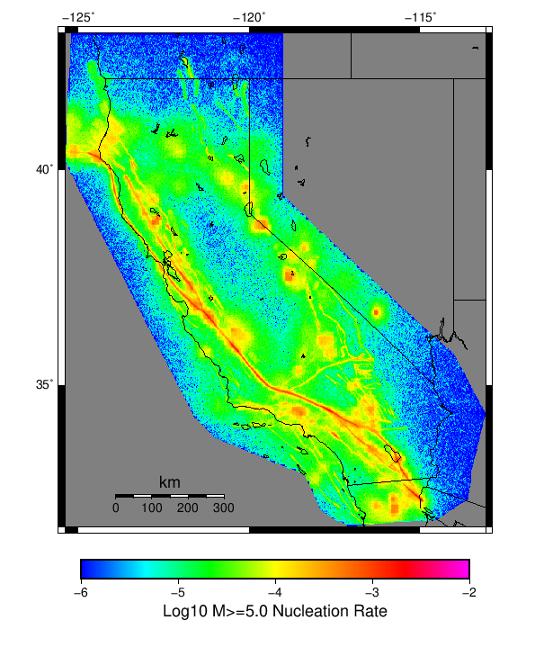
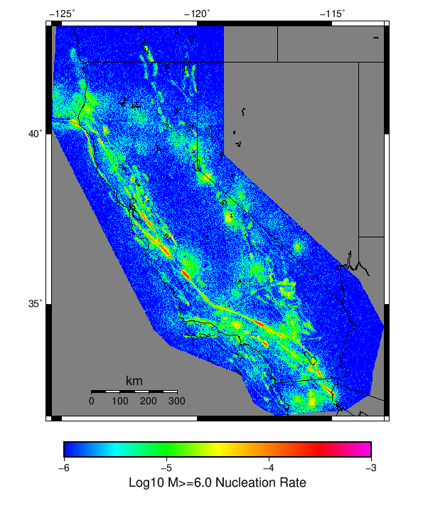

Start 1919, 500 yr, Scale Factor 1.0, Spontaneous, Historical Catalog Results
| Start 1919, 500 yr, Scale Factor 1.0, Spontaneous, Historical Catalog |
|---|
| Num Simulations | 521 (incomplete) |
| Start Time | 1919/01/01 00:00:00 UTC |
| Start Time Epoch Milliseconds | -1609459200000 |
| Duration | 500 Years |
| Includes Spontaneous? | true |
| Trigger Ruptures | (none) |
| Historical Ruptures | 165 Trigger Ruptures |
| First: M7.3 at 1852/01/05 04:40:39 UTC |
| Last: M6.5 at 1918/07/15 00:24:39 UTC |
| Largest: M7.9 at 1857/01/09 16:25:39 UTC |
| Config Generated With | u3etas_config_builder.sh --start-year 1919 --num-simulations 1000 --duration-years 500 --include-spontaneous --historical-catalog --scale-factor 1.0 --hpc-site USC_HPC --nodes 36 --hours 24 --queue scec |
Table Of Contents
Magnitude Frequency Distribution
(top)
Legend
- Mean (thick black line): mean annual rate across all 521 catalogs
- 2.5%,97.5% (thin black lines): annual rate percentiles across all 521 catalogs
- Median (thin blue line): median annual rate across all 521 catalogs
- Mode (thin cyan line): modal annual rate across all 521 catalogs (scaled to annualized value)
- 500 yr Probability (thin red line): 500 year probability calculated as the fraction of catalogs with at least 1 occurrence
- 500 yr Supraseismogenic Probability (thin dashed red line): same as above, but only for supraseismogenic ruptures on explicitly modeled UCERF3 faults
- 95% Conf (light red shaded region): binomial 95% confidence bounds on probability

| Mag | Mean | 2.5 %ile | 97.5 %ile | Median | Mode | 500 yr Probability | 500 yr Supra-Seis Prob |
|---|
| M≥5 | 6.819 | 6.172 | 7.544 | 6.814 | 7.190 | 1.000 (100.00%) | 1.000 (100.00%) |
| M≥5.1 | 5.397 | 4.862 | 5.968 | 5.386 | 5.430 | 1.000 (100.00%) | 1.000 (100.00%) |
| M≥5.2 | 4.263 | 3.824 | 4.724 | 4.264 | 4.300 | 1.000 (100.00%) | 1.000 (100.00%) |
| M≥5.3 | 3.362 | 3.004 | 3.728 | 3.368 | 3.424 | 1.000 (100.00%) | 1.000 (100.00%) |
| M≥5.4 | 2.647 | 2.338 | 2.942 | 2.644 | 2.562 | 1.000 (100.00%) | 1.000 (100.00%) |
| M≥5.5 | 2.080 | 1.822 | 2.316 | 2.076 | 2.096 | 1.000 (100.00%) | 1.000 (100.00%) |
| M≥5.6 | 1.627 | 1.428 | 1.826 | 1.628 | 1.640 | 1.000 (100.00%) | 1.000 (100.00%) |
| M≥5.7 | 1.268 | 1.104 | 1.426 | 1.264 | 1.248 | 1.000 (100.00%) | 1.000 (100.00%) |
| M≥5.8 | 0.984 | 0.860 | 1.112 | 0.984 | 0.998 | 1.000 (100.00%) | 1.000 (100.00%) |
| M≥5.9 | 0.748 | 0.644 | 0.852 | 0.746 | 0.742 | 1.000 (100.00%) | 1.000 (100.00%) |
| M≥6 | 0.592 | 0.504 | 0.682 | 0.588 | 0.598 | 1.000 (100.00%) | 1.000 (100.00%) |
| M≥6.1 | 0.454 | 0.386 | 0.530 | 0.452 | 0.452 | 1.000 (100.00%) | 1.000 (100.00%) |
| M≥6.2 | 0.358 | 0.302 | 0.424 | 0.356 | 0.356 | 1.000 (100.00%) | 1.000 (100.00%) |
| M≥6.3 | 0.282 | 0.236 | 0.336 | 0.282 | 0.288 | 1.000 (100.00%) | 1.000 (100.00%) |
| M≥6.4 | 0.220 | 0.180 | 0.264 | 0.220 | 0.228 | 1.000 (100.00%) | 1.000 (100.00%) |
| M≥6.5 | 0.169 | 0.134 | 0.210 | 0.170 | 0.174 | 1.000 (100.00%) | 1.000 (100.00%) |
| M≥6.6 | 0.131 | 0.102 | 0.164 | 0.132 | 0.134 | 1.000 (100.00%) | 1.000 (100.00%) |
| M≥6.7 | 0.100 | 0.074 | 0.130 | 0.100 | 0.102 | 1.000 (100.00%) | 1.000 (100.00%) |
| M≥6.8 | 0.079 | 0.058 | 0.102 | 0.080 | 0.082 | 1.000 (100.00%) | 1.000 (100.00%) |
| M≥6.9 | 0.061 | 0.042 | 0.080 | 0.062 | 0.064 | 1.000 (100.00%) | 1.000 (100.00%) |
| M≥7 | 0.048 | 0.032 | 0.066 | 0.048 | 0.048 | 1.000 (100.00%) | 1.000 (100.00%) |
| M≥7.1 | 0.036 | 0.022 | 0.052 | 0.036 | 0.036 | 1.000 (100.00%) | 1.000 (100.00%) |
| M≥7.2 | 0.027 | 0.016 | 0.040 | 0.026 | 0.026 | 1.000 (100.00%) | 1.000 (100.00%) |
| M≥7.3 | 0.021 | 0.012 | 0.032 | 0.022 | 0.020 | 1.000 (100.00%) | 1.000 (100.00%) |
| M≥7.4 | 0.016 | 8.00E-3 | 0.026 | 0.016 | 0.014 | 1.000 (100.00%) | 1.000 (100.00%) |
| M≥7.5 | 0.012 | 6.00E-3 | 0.020 | 0.012 | 0.010 | 1.000 (100.00%) | 1.000 (100.00%) |
| M≥7.6 | 8.78E-3 | 4.00E-3 | 0.014 | 8.00E-3 | 8.00E-3 | 1.000 (100.00%) | 1.000 (100.00%) |
| M≥7.7 | 6.19E-3 | 2.00E-3 | 0.010 | 6.00E-3 | 6.00E-3 | 0.996 (99.62%) | 0.996 (99.62%) |
| M≥7.8 | 4.26E-3 | 2.00E-3 | 8.00E-3 | 4.00E-3 | 4.00E-3 | 0.979 (97.89%) | 0.979 (97.89%) |
| M≥7.9 | 2.35E-3 | 0.000 | 6.00E-3 | 2.00E-3 | 2.00E-3 | 0.781 (78.12%) | 0.781 (78.12%) |
| M≥8 | 1.24E-3 | 0.000 | 4.00E-3 | 2.00E-3 | 0.000 | 0.522 (52.21%) | 0.522 (52.21%) |
| M≥8.1 | 5.95E-4 | 0.000 | 2.00E-3 | 0.000 | 0.000 | 0.278 (27.83%) | 0.278 (27.83%) |
| M≥8.2 | 2.50E-4 | 0.000 | 2.00E-3 | 0.000 | 0.000 | 0.123 (12.28%) | 0.123 (12.28%) |
| M≥8.3 | 6.91E-5 | 0.000 | 2.00E-3 | 0.000 | 0.000 | 0.035 (3.45%) | 0.035 (3.45%) |
| M≥8.4 | 0.000 | 0.000 | 0.000 | 0.000 | 0.000 | 0.000 (0.00%) | 0.000 (0.00%) |
| M≥8.5 | 0.000 | 0.000 | 0.000 | 0.000 | 0.000 | 0.000 (0.00%) | 0.000 (0.00%) |
| M≥8.6 | 0.000 | 0.000 | 0.000 | 0.000 | 0.000 | 0.000 (0.00%) | 0.000 (0.00%) |
| M≥8.7 | 0.000 | 0.000 | 0.000 | 0.000 | 0.000 | 0.000 (0.00%) | 0.000 (0.00%) |
| M≥8.8 | 0.000 | 0.000 | 0.000 | 0.000 | 0.000 | 0.000 (0.00%) | 0.000 (0.00%) |
| M≥8.9 | 0.000 | 0.000 | 0.000 | 0.000 | 0.000 | 0.000 (0.00%) | 0.000 (0.00%) |
| M≥9 | 0.000 | 0.000 | 0.000 | 0.000 | 0.000 | 0.000 (0.00%) | 0.000 (0.00%) |
Long Term Rate Variability
(top)
162 Year Variability
(top)

Download CSV Here
| Magnitude | Mean | Median | Mode | Std. Dev. | 2.5 %-ile | 16 %-ile | 84 %-ile | 97.5 %-ile |
|---|
| 5.0 | 6.8195066 | 6.7777777 | 7.0 | 0.6622517 | 5.617284 | 6.1666665 | 7.4506173 | 8.185185 |
| 5.1 | 5.397147 | 5.376543 | 5.432099 | 0.53405935 | 4.4074073 | 4.8703704 | 5.9074073 | 6.5061727 |
| 5.2 | 4.263173 | 4.2469134 | 4.283951 | 0.42951387 | 3.4567902 | 3.845679 | 4.685185 | 5.1728396 |
| 5.3 | 3.3627717 | 3.351852 | 3.2777777 | 0.34866524 | 2.728395 | 3.0123458 | 3.6975307 | 4.1049385 |
| 5.4 | 2.6471488 | 2.6419754 | 2.5987654 | 0.282476 | 2.1296296 | 2.3765433 | 2.9135802 | 3.2407408 |
| 5.5 | 2.0806024 | 2.0679011 | 1.9938271 | 0.22778003 | 1.6728395 | 1.8580247 | 2.3024693 | 2.5555556 |
| 5.6 | 1.6277577 | 1.6172839 | 1.5555556 | 0.18598217 | 1.2901235 | 1.4444444 | 1.808642 | 2.006173 |
| 5.7 | 1.2689352 | 1.2654321 | 1.2160494 | 0.1494761 | 0.99382716 | 1.1172839 | 1.425926 | 1.5679013 |
| 5.8 | 0.98425394 | 0.9814815 | 0.9814815 | 0.119899705 | 0.77160496 | 0.86419755 | 1.0987654 | 1.2345679 |
| 5.9 | 0.7482406 | 0.74691355 | 0.74691355 | 0.096592665 | 0.5740741 | 0.654321 | 0.83950615 | 0.9506173 |
| 6.0 | 0.59197646 | 0.58641976 | 0.5925926 | 0.07984623 | 0.44444445 | 0.5123457 | 0.6728395 | 0.7592593 |
| 6.1 | 0.4545074 | 0.45061728 | 0.44444445 | 0.06664079 | 0.33333334 | 0.3888889 | 0.5185185 | 0.58641976 |
| 6.2 | 0.3579615 | 0.3580247 | 0.34567901 | 0.056420397 | 0.25308642 | 0.30246913 | 0.41358024 | 0.47530866 |
| 6.3 | 0.28169948 | 0.2777778 | 0.2777778 | 0.04803149 | 0.19753087 | 0.2345679 | 0.3271605 | 0.38271606 |
| 6.4 | 0.2199237 | 0.21604939 | 0.2345679 | 0.040768445 | 0.14814815 | 0.17901234 | 0.25925925 | 0.30864197 |
| 6.5 | 0.1689415 | 0.16666667 | 0.16666667 | 0.03453027 | 0.10493827 | 0.13580246 | 0.2037037 | 0.24074075 |
| 6.6 | 0.13073939 | 0.12962963 | 0.12345679 | 0.0294264 | 0.074074075 | 0.09876543 | 0.16049382 | 0.19135803 |
| 6.7 | 0.10024644 | 0.09876543 | 0.09259259 | 0.024677042 | 0.055555556 | 0.074074075 | 0.12345679 | 0.15432099 |
| 6.8 | 0.079117395 | 0.08024691 | 0.08024691 | 0.02191612 | 0.037037037 | 0.055555556 | 0.09876543 | 0.12962963 |
| 6.9 | 0.06114784 | 0.061728396 | 0.061728396 | 0.019004272 | 0.024691358 | 0.043209877 | 0.08024691 | 0.09876543 |
| 7.0 | 0.04778323 | 0.049382716 | 0.043209877 | 0.016629359 | 0.018518519 | 0.030864198 | 0.061728396 | 0.086419754 |
| 7.1 | 0.036124736 | 0.037037037 | 0.037037037 | 0.014281373 | 0.012345679 | 0.024691358 | 0.049382716 | 0.06790123 |
| 7.2 | 0.02724264 | 0.024691358 | 0.024691358 | 0.012028419 | 0.0061728396 | 0.018518519 | 0.037037037 | 0.055555556 |
| 7.3 | 0.021298863 | 0.018518519 | 0.018518519 | 0.010180828 | 0.0061728396 | 0.012345679 | 0.030864198 | 0.043209877 |
| 7.4 | 0.01642931 | 0.018518519 | 0.012345679 | 0.008887511 | 0.0 | 0.0061728396 | 0.024691358 | 0.037037037 |
| 7.5 | 0.011682187 | 0.012345679 | 0.012345679 | 0.007431512 | 0.0 | 0.0061728396 | 0.018518519 | 0.030864198 |
| 7.6 | 0.008767565 | 0.0061728396 | 0.0061728396 | 0.006284135 | 0.0 | 0.0 | 0.012345679 | 0.024691358 |
| 7.7 | 0.006157042 | 0.0061728396 | 0.0061728396 | 0.0051422957 | 0.0 | 0.0 | 0.012345679 | 0.018518519 |
| 7.8 | 0.0042337067 | 0.0061728396 | 0.0061728396 | 0.0042738086 | 0.0 | 0.0 | 0.0061728396 | 0.012345679 |
| 7.9 | 0.0023340678 | 0.0 | 0.0 | 0.0032670007 | 0.0 | 0.0 | 0.0061728396 | 0.0061728396 |
| 8.0 | 0.0012282489 | 0.0 | 0.0 | 0.0025044421 | 0.0 | 0.0 | 0.0061728396 | 0.0061728396 |
| 8.1 | 6.003017E-4 | 0.0 | 0.0 | 0.0018295753 | 0.0 | 0.0 | 0.0 | 0.0061728396 |
| 8.2 | 2.4880926E-4 | 0.0 | 0.0 | 0.0012144535 | 0.0 | 0.0 | 0.0 | 0.0061728396 |
| 8.3 | 7.108836E-5 | 0.0 | 0.0 | 6.5881805E-4 | 0.0 | 0.0 | 0.0 | 0.0 |
| 8.4 | 0.0 | 0.0 | 0.0 | 0.0 | 0.0 | 0.0 | 0.0 | 0.0 |
| 8.5 | 0.0 | 0.0 | 0.0 | 0.0 | 0.0 | 0.0 | 0.0 | 0.0 |
| 8.6 | 0.0 | 0.0 | 0.0 | 0.0 | 0.0 | 0.0 | 0.0 | 0.0 |
| 8.7 | 0.0 | 0.0 | 0.0 | 0.0 | 0.0 | 0.0 | 0.0 | 0.0 |
| 8.8 | 0.0 | 0.0 | 0.0 | 0.0 | 0.0 | 0.0 | 0.0 | 0.0 |
| 8.9 | 0.0 | 0.0 | 0.0 | 0.0 | 0.0 | 0.0 | 0.0 | 0.0 |
| 9.0 | 0.0 | 0.0 | 0.0 | 0.0 | 0.0 | 0.0 | 0.0 | 0.0 |
80 Year Variability
(top)

Download CSV Here
| Magnitude | Mean | Median | Mode | Std. Dev. | 2.5 %-ile | 16 %-ile | 84 %-ile | 97.5 %-ile |
|---|
| 5.0 | 6.820721 | 6.725 | 6.6375 | 0.99333364 | 5.1625 | 5.85 | 7.775 | 9.0875 |
| 5.1 | 5.3981566 | 5.3125 | 5.225 | 0.796722 | 4.1 | 4.625 | 6.1625 | 7.225 |
| 5.2 | 4.263756 | 4.2 | 4.0375 | 0.63870347 | 3.1875 | 3.65 | 4.8875 | 5.725 |
| 5.3 | 3.3632958 | 3.3125 | 2.9625 | 0.515484 | 2.4875 | 2.875 | 3.8875 | 4.4875 |
| 5.4 | 2.6475327 | 2.6125 | 2.5625 | 0.4162178 | 1.9375 | 2.25 | 3.05 | 3.5625 |
| 5.5 | 2.0807822 | 2.05 | 1.925 | 0.33688894 | 1.5 | 1.75 | 2.4125 | 2.8125 |
| 5.6 | 1.6279311 | 1.6125 | 1.6625 | 0.27262402 | 1.15 | 1.3625 | 1.9 | 2.2 |
| 5.7 | 1.2692338 | 1.25 | 1.225 | 0.21955624 | 0.8875 | 1.0625 | 1.4875 | 1.725 |
| 5.8 | 0.984329 | 0.975 | 0.875 | 0.17574923 | 0.675 | 0.8125 | 1.1625 | 1.35 |
| 5.9 | 0.7484725 | 0.7375 | 0.7375 | 0.14153822 | 0.5 | 0.6125 | 0.8875 | 1.0625 |
| 6.0 | 0.5920026 | 0.5875 | 0.5625 | 0.116968885 | 0.3875 | 0.475 | 0.7125 | 0.8375 |
| 6.1 | 0.45445856 | 0.45 | 0.425 | 0.09735484 | 0.2875 | 0.3625 | 0.55 | 0.6625 |
| 6.2 | 0.35791346 | 0.35 | 0.3375 | 0.08200614 | 0.2125 | 0.275 | 0.4375 | 0.5375 |
| 6.3 | 0.28164187 | 0.275 | 0.275 | 0.07024828 | 0.1625 | 0.2125 | 0.35 | 0.425 |
| 6.4 | 0.21992563 | 0.2125 | 0.2 | 0.05980629 | 0.1125 | 0.1625 | 0.275 | 0.35 |
| 6.5 | 0.16902591 | 0.1625 | 0.15 | 0.050884172 | 0.075 | 0.1125 | 0.225 | 0.275 |
| 6.6 | 0.13074216 | 0.125 | 0.125 | 0.04336262 | 0.0625 | 0.0875 | 0.175 | 0.225 |
| 6.7 | 0.10027991 | 0.1 | 0.0875 | 0.036847275 | 0.0375 | 0.0625 | 0.1375 | 0.1875 |
| 6.8 | 0.07915067 | 0.075 | 0.0625 | 0.03251102 | 0.025 | 0.05 | 0.1125 | 0.15 |
| 6.9 | 0.06118442 | 0.0625 | 0.05 | 0.027894778 | 0.0125 | 0.0375 | 0.0875 | 0.125 |
| 7.0 | 0.047796704 | 0.05 | 0.0375 | 0.024590526 | 0.0125 | 0.025 | 0.075 | 0.1 |
| 7.1 | 0.03615243 | 0.0375 | 0.025 | 0.021202205 | 0.0 | 0.0125 | 0.0625 | 0.0875 |
| 7.2 | 0.027247282 | 0.025 | 0.025 | 0.017906649 | 0.0 | 0.0125 | 0.05 | 0.0625 |
| 7.3 | 0.021301184 | 0.025 | 0.0125 | 0.015545558 | 0.0 | 0.0 | 0.0375 | 0.05 |
| 7.4 | 0.016426744 | 0.0125 | 0.0125 | 0.013337007 | 0.0 | 0.0 | 0.025 | 0.05 |
| 7.5 | 0.011672265 | 0.0125 | 0.0125 | 0.0112500945 | 0.0 | 0.0 | 0.025 | 0.0375 |
| 7.6 | 0.0087492 | 0.0125 | 0.0 | 0.009546046 | 0.0 | 0.0 | 0.0125 | 0.025 |
| 7.7 | 0.006150032 | 0.0 | 0.0 | 0.007972767 | 0.0 | 0.0 | 0.0125 | 0.025 |
| 7.8 | 0.0042386437 | 0.0 | 0.0 | 0.0066654445 | 0.0 | 0.0 | 0.0125 | 0.025 |
| 7.9 | 0.0023432502 | 0.0 | 0.0 | 0.0050306483 | 0.0 | 0.0 | 0.0125 | 0.0125 |
| 8.0 | 0.0012356046 | 0.0 | 0.0 | 0.003731326 | 0.0 | 0.0 | 0.0 | 0.0125 |
| 8.1 | 6.038068E-4 | 0.0 | 0.0 | 0.002680541 | 0.0 | 0.0 | 0.0 | 0.0125 |
| 8.2 | 2.5191938E-4 | 0.0 | 0.0 | 0.0017568484 | 0.0 | 0.0 | 0.0 | 0.0 |
| 8.3 | 7.197697E-5 | 0.0 | 0.0 | 9.45948E-4 | 0.0 | 0.0 | 0.0 | 0.0 |
| 8.4 | 0.0 | 0.0 | 0.0 | 0.0 | 0.0 | 0.0 | 0.0 | 0.0 |
| 8.5 | 0.0 | 0.0 | 0.0 | 0.0 | 0.0 | 0.0 | 0.0 | 0.0 |
| 8.6 | 0.0 | 0.0 | 0.0 | 0.0 | 0.0 | 0.0 | 0.0 | 0.0 |
| 8.7 | 0.0 | 0.0 | 0.0 | 0.0 | 0.0 | 0.0 | 0.0 | 0.0 |
| 8.8 | 0.0 | 0.0 | 0.0 | 0.0 | 0.0 | 0.0 | 0.0 | 0.0 |
| 8.9 | 0.0 | 0.0 | 0.0 | 0.0 | 0.0 | 0.0 | 0.0 | 0.0 |
| 9.0 | 0.0 | 0.0 | 0.0 | 0.0 | 0.0 | 0.0 | 0.0 | 0.0 |
28 Year Variability
(top)

Download CSV Here
| Magnitude | Mean | Median | Mode | Std. Dev. | 2.5 %-ile | 16 %-ile | 84 %-ile | 97.5 %-ile |
|---|
| 5.0 | 6.8211665 | 6.464286 | 5.964286 | 1.7002403 | 4.464286 | 5.321429 | 8.285714 | 11.107142 |
| 5.1 | 5.3981276 | 5.142857 | 4.785714 | 1.3649561 | 3.4642856 | 4.178571 | 6.571429 | 8.821428 |
| 5.2 | 4.2636776 | 4.071429 | 3.642857 | 1.0934571 | 2.6785715 | 3.2857144 | 5.214286 | 6.964286 |
| 5.3 | 3.3632076 | 3.2142856 | 3.0714285 | 0.8794685 | 2.0714285 | 2.5714285 | 4.142857 | 5.5 |
| 5.4 | 2.6476517 | 2.5357144 | 2.4285715 | 0.7053594 | 1.5714285 | 2.0 | 3.2857144 | 4.321429 |
| 5.5 | 2.081066 | 2.0 | 1.9285715 | 0.5696874 | 1.2142857 | 1.5357143 | 2.607143 | 3.4285715 |
| 5.6 | 1.6282843 | 1.5714285 | 1.5 | 0.45893493 | 0.89285713 | 1.2142857 | 2.0714285 | 2.7142856 |
| 5.7 | 1.2695084 | 1.2142857 | 1.1071428 | 0.3693978 | 0.6785714 | 0.9285714 | 1.6071428 | 2.107143 |
| 5.8 | 0.9845159 | 0.9285714 | 0.85714287 | 0.29911238 | 0.5 | 0.71428573 | 1.2857143 | 1.6428572 |
| 5.9 | 0.7485605 | 0.71428573 | 0.71428573 | 0.24003536 | 0.35714287 | 0.5 | 0.96428573 | 1.2857143 |
| 6.0 | 0.59207404 | 0.5714286 | 0.53571427 | 0.19988982 | 0.25 | 0.39285713 | 0.78571427 | 1.0357143 |
| 6.1 | 0.45448315 | 0.42857143 | 0.42857143 | 0.16721871 | 0.17857143 | 0.2857143 | 0.60714287 | 0.8214286 |
| 6.2 | 0.3579695 | 0.35714287 | 0.2857143 | 0.14148253 | 0.10714286 | 0.21428572 | 0.5 | 0.6785714 |
| 6.3 | 0.2817384 | 0.2857143 | 0.25 | 0.12148838 | 0.071428575 | 0.17857143 | 0.39285713 | 0.53571427 |
| 6.4 | 0.2200479 | 0.21428572 | 0.21428572 | 0.103764184 | 0.035714287 | 0.10714286 | 0.32142857 | 0.4642857 |
| 6.5 | 0.16913983 | 0.14285715 | 0.14285715 | 0.08873013 | 0.035714287 | 0.071428575 | 0.25 | 0.35714287 |
| 6.6 | 0.13082469 | 0.10714286 | 0.10714286 | 0.07581908 | 0.0 | 0.071428575 | 0.21428572 | 0.2857143 |
| 6.7 | 0.10036855 | 0.10714286 | 0.071428575 | 0.06477662 | 0.0 | 0.035714287 | 0.17857143 | 0.25 |
| 6.8 | 0.07921095 | 0.071428575 | 0.071428575 | 0.05678646 | 0.0 | 0.035714287 | 0.14285715 | 0.21428572 |
| 6.9 | 0.061214697 | 0.071428575 | 0.035714287 | 0.049404252 | 0.0 | 0.0 | 0.10714286 | 0.17857143 |
| 7.0 | 0.047827385 | 0.035714287 | 0.035714287 | 0.043266036 | 0.0 | 0.0 | 0.071428575 | 0.14285715 |
| 7.1 | 0.03617397 | 0.035714287 | 0.0 | 0.037405383 | 0.0 | 0.0 | 0.071428575 | 0.10714286 |
| 7.2 | 0.027262537 | 0.035714287 | 0.0 | 0.032081462 | 0.0 | 0.0 | 0.071428575 | 0.10714286 |
| 7.3 | 0.021322925 | 0.0 | 0.0 | 0.027874852 | 0.0 | 0.0 | 0.035714287 | 0.071428575 |
| 7.4 | 0.016423652 | 0.0 | 0.0 | 0.024127943 | 0.0 | 0.0 | 0.035714287 | 0.071428575 |
| 7.5 | 0.011661478 | 0.0 | 0.0 | 0.020223644 | 0.0 | 0.0 | 0.035714287 | 0.071428575 |
| 7.6 | 0.008746109 | 0.0 | 0.0 | 0.017190717 | 0.0 | 0.0 | 0.035714287 | 0.035714287 |
| 7.7 | 0.0061452603 | 0.0 | 0.0 | 0.014340101 | 0.0 | 0.0 | 0.035714287 | 0.035714287 |
| 7.8 | 0.004233939 | 0.0 | 0.0 | 0.011901871 | 0.0 | 0.0 | 0.0 | 0.035714287 |
| 7.9 | 0.0023387475 | 0.0 | 0.0 | 0.008900449 | 0.0 | 0.0 | 0.0 | 0.035714287 |
| 8.0 | 0.0012338909 | 0.0 | 0.0 | 0.0065230243 | 0.0 | 0.0 | 0.0 | 0.035714287 |
| 8.1 | 6.0081616E-4 | 0.0 | 0.0 | 0.004593378 | 0.0 | 0.0 | 0.0 | 0.0 |
| 8.2 | 2.5403636E-4 | 0.0 | 0.0 | 0.0030015346 | 0.0 | 0.0 | 0.0 | 0.0 |
| 8.3 | 7.258182E-5 | 0.0 | 0.0 | 0.0016084875 | 0.0 | 0.0 | 0.0 | 0.0 |
| 8.4 | 0.0 | 0.0 | 0.0 | 0.0 | 0.0 | 0.0 | 0.0 | 0.0 |
| 8.5 | 0.0 | 0.0 | 0.0 | 0.0 | 0.0 | 0.0 | 0.0 | 0.0 |
| 8.6 | 0.0 | 0.0 | 0.0 | 0.0 | 0.0 | 0.0 | 0.0 | 0.0 |
| 8.7 | 0.0 | 0.0 | 0.0 | 0.0 | 0.0 | 0.0 | 0.0 | 0.0 |
| 8.8 | 0.0 | 0.0 | 0.0 | 0.0 | 0.0 | 0.0 | 0.0 | 0.0 |
| 8.9 | 0.0 | 0.0 | 0.0 | 0.0 | 0.0 | 0.0 | 0.0 | 0.0 |
| 9.0 | 0.0 | 0.0 | 0.0 | 0.0 | 0.0 | 0.0 | 0.0 | 0.0 |
Variability Duration Dependence
(top)

Download CSV Here
| Duration (years) | Mean | Median | Mode | Std. Dev. | 2.5 %-ile | 16 %-ile | 84 %-ile | 97.5 %-ile |
|---|
| 1.0 | 6.819447 | 5.0 | 4.0 | 7.193453 | 1.0 | 3.0 | 10.0 | 22.0 |
| 4.0 | 6.819447 | 6.0 | 5.0 | 4.0454626 | 2.75 | 4.0 | 9.0 | 17.5 |
| 8.0 | 6.8186607 | 6.125 | 5.625 | 3.0064027 | 3.375 | 4.5 | 8.75 | 15.125 |
| 12.0 | 6.817557 | 6.25 | 5.3333335 | 2.5059848 | 3.75 | 4.8333335 | 8.666667 | 13.583333 |
| 16.0 | 6.8186607 | 6.3125 | 5.625 | 2.1961412 | 4.0 | 5.0 | 8.625 | 12.625 |
| 20.0 | 6.819447 | 6.4 | 5.55 | 1.9978144 | 4.2 | 5.1 | 8.5 | 12.05 |
| 24.0 | 6.820721 | 6.4166665 | 6.0416665 | 1.8341926 | 4.3333335 | 5.2083335 | 8.416667 | 11.583333 |
| 28.0 | 6.8211665 | 6.464286 | 5.964286 | 1.7002403 | 4.464286 | 5.321429 | 8.285714 | 11.107142 |
| 32.0 | 6.820721 | 6.5 | 5.96875 | 1.5966665 | 4.5625 | 5.375 | 8.28125 | 10.75 |
| 36.0 | 6.821567 | 6.5277777 | 6.361111 | 1.5154514 | 4.638889 | 5.4444447 | 8.194445 | 10.527778 |
| 40.0 | 6.820721 | 6.575 | 6.225 | 1.4295774 | 4.725 | 5.5 | 8.15 | 10.3 |
| 44.0 | 6.8208985 | 6.568182 | 6.0454545 | 1.3782899 | 4.7954545 | 5.5454545 | 8.113636 | 10.136364 |
| 48.0 | 6.820721 | 6.6041665 | 6.1041665 | 1.2972955 | 4.8541665 | 5.6041665 | 8.020833 | 9.958333 |
| 52.0 | 6.821567 | 6.6153846 | 6.1923075 | 1.2595887 | 4.9038463 | 5.6153846 | 8.038462 | 9.923077 |
| 56.0 | 6.813884 | 6.625 | 6.321429 | 1.1988288 | 4.946429 | 5.678571 | 7.982143 | 9.553572 |
| 60.0 | 6.820721 | 6.6666665 | 6.116667 | 1.1765183 | 5.016667 | 5.7 | 7.983333 | 9.583333 |
| 64.0 | 6.813884 | 6.671875 | 6.46875 | 1.1280767 | 5.0625 | 5.71875 | 7.875 | 9.4375 |
| 68.0 | 6.8211665 | 6.6911764 | 6.9558825 | 1.0870893 | 5.0882354 | 5.7647057 | 7.852941 | 9.294118 |
| 72.0 | 6.813904 | 6.6666665 | 6.513889 | 1.0689688 | 5.125 | 5.7777777 | 7.8472223 | 9.263889 |
| 76.0 | 6.817465 | 6.6842103 | 6.644737 | 1.0193055 | 5.1710525 | 5.8289475 | 7.8289475 | 9.210526 |
| 80.0 | 6.820721 | 6.725 | 6.6375 | 0.99333364 | 5.1625 | 5.85 | 7.775 | 9.0875 |
| 84.0 | 6.81589 | 6.702381 | 6.714286 | 0.9879764 | 5.202381 | 5.857143 | 7.7380953 | 9.083333 |
| 88.0 | 6.8158264 | 6.7045455 | 6.681818 | 0.97052 | 5.25 | 5.875 | 7.7727275 | 8.954545 |
| 92.0 | 6.8173246 | 6.7065215 | 6.402174 | 0.9311775 | 5.2826085 | 5.9130435 | 7.7391305 | 8.869565 |
| 96.0 | 6.820721 | 6.75 | 7.0416665 | 0.89251286 | 5.3125 | 5.9166665 | 7.6979165 | 8.697917 |
| 100.0 | 6.819447 | 6.74 | 7.22 | 0.8781744 | 5.34 | 5.93 | 7.69 | 8.74 |
| 200.0 | 6.812932 | 6.775 | 6.37 | 0.6046147 | 5.725 | 6.225 | 7.42 | 8.105 |
| 300.0 | 6.763954 | 6.7366667 | 6.55 | 0.46604997 | 5.943333 | 6.3 | 7.24 | 7.8033333 |
| 400.0 | 6.812932 | 6.82 | 6.8925 | 0.400378 | 6.1075 | 6.3975 | 7.225 | 7.66 |
| 500.0 | 6.819447 | 6.814 | 7.19 | 0.34910163 | 6.172 | 6.476 | 7.19 | 7.544 |
Simulation Stationarity
(top)

Section Participation
(top)
Section Participation Plots
(top)
| Min Mag | Complete Catalog (including spontaneous) |
|---|
| All Supra. Seis. |  |
| M≥6.5 |  |
| M≥7 |  |
| M≥7.5 |  |
| M≥8 |  |
Supra-Seismogenic Parent Sections Table
(top)
First 10 of 312 with matching ruptures shown
| Parent Name | Total Mean Annual Rate | Total 500 Year Prob |
|---|
| San Andreas (Parkfield) | 0.040495202 | 1.0 |
| San Andreas (Creeping Section) 2011 CFM | 0.025101727 | 1.0 |
| San Andreas (Mojave S) | 0.018134357 | 1.0 |
| Mendocino | 0.0140959695 | 1.0 |
| Cerro Prieto | 0.011642994 | 0.9980806 |
| Imperial | 0.010380038 | 1.0 |
| Brawley (Seismic Zone) alt 1 | 0.009458733 | 1.0 |
| Hayward (So) 2011 CFM | 0.00806142 | 0.9980806 |
| Elsinore (Glen Ivy) rev | 0.00668714 | 0.9635317 |
| San Andreas (Offshore) 2011 CFM | 0.0066103647 | 0.99424183 |
M≥6.5 Parent Sections Table
(top)
First 10 of 304 with matching ruptures shown
| Parent Name | Total Mean Annual Rate | Total 500 Year Prob |
|---|
| Cerro Prieto | 0.010026871 | 0.9980806 |
| San Andreas (Creeping Section) 2011 CFM | 0.009147793 | 0.9961612 |
| Imperial | 0.0071324375 | 0.99232244 |
| Mendocino | 0.007059501 | 0.96928984 |
| Hayward (So) 2011 CFM | 0.0068099806 | 0.9961612 |
| Brawley (Seismic Zone) alt 1 | 0.0067140115 | 0.99040306 |
| San Andreas (Mojave S) | 0.0059769675 | 0.9980806 |
| San Andreas (Santa Cruz Mts) 2011 CFM | 0.0058733206 | 0.99040306 |
| San Andreas (San Bernardino N) | 0.0056084455 | 0.9961612 |
| San Andreas (Cholame) rev | 0.0050211134 | 1.0 |
M≥7 Parent Sections Table
(top)
First 10 of 271 with matching ruptures shown
| Parent Name | Total Mean Annual Rate | Total 500 Year Prob |
|---|
| San Andreas (Creeping Section) 2011 CFM | 0.0056007677 | 0.9731286 |
| San Andreas (Carrizo) rev | 0.00465643 | 1.0 |
| San Andreas (Cholame) rev | 0.0046410747 | 0.9980806 |
| San Andreas (Santa Cruz Mts) 2011 CFM | 0.0045451056 | 0.975048 |
| San Andreas (Mojave S) | 0.004238004 | 0.99232244 |
| San Andreas (Mojave N) | 0.003965451 | 0.9980806 |
| San Andreas (Coachella) rev | 0.0037850288 | 0.96737045 |
| San Andreas (Big Bend) | 0.0036852208 | 0.98848367 |
| San Andreas (San Bernardino N) | 0.0036852208 | 0.9616123 |
| San Andreas (Parkfield) | 0.003581574 | 0.9328215 |
M≥7.5 Parent Sections Table
(top)
First 10 of 196 with matching ruptures shown
| Parent Name | Total Mean Annual Rate | Total 500 Year Prob |
|---|
| San Andreas (Mojave N) | 0.0038925144 | 0.9980806 |
| San Andreas (Big Bend) | 0.0035700577 | 0.9865643 |
| San Andreas (Mojave S) | 0.003362764 | 0.96737045 |
| San Andreas (Carrizo) rev | 0.0033589252 | 0.9731286 |
| San Andreas (Cholame) rev | 0.0031900192 | 0.9616123 |
| San Andreas (North Coast) 2011 CFM | 0.002856046 | 0.92514396 |
| San Andreas (Creeping Section) 2011 CFM | 0.0027639156 | 0.8387716 |
| San Andreas (San Bernardino N) | 0.0027140116 | 0.88483685 |
| San Andreas (Parkfield) | 0.0024913629 | 0.8522073 |
| San Andreas (Peninsula) 2011 CFM | 0.002383877 | 0.8541267 |
M≥8 Parent Sections Table
(top)
First 10 of 51 with matching ruptures shown
| Parent Name | Total Mean Annual Rate | Total 500 Year Prob |
|---|
| San Andreas (Mojave N) | 0.0011516315 | 0.49520153 |
| San Andreas (Mojave S) | 0.0011285988 | 0.4894434 |
| San Andreas (Carrizo) rev | 0.0011170825 | 0.487524 |
| San Andreas (Big Bend) | 0.0011132438 | 0.4856046 |
| San Andreas (Cholame) rev | 0.0011017275 | 0.47984645 |
| San Andreas (San Bernardino N) | 0.0010710172 | 0.46449137 |
| San Andreas (Parkfield) | 9.481766E-4 | 0.42802304 |
| San Andreas (Creeping Section) 2011 CFM | 8.7140116E-4 | 0.3934741 |
| San Andreas (Santa Cruz Mts) 2011 CFM | 6.026871E-4 | 0.27639157 |
| San Andreas (Peninsula) 2011 CFM | 5.259117E-4 | 0.24568138 |
Gridded Nucleation
(top)
| Min Mag | Complete Catalog (including spontaneous) |
|---|
| M≥5 |  |
| M≥6 |  |
| M≥7 |  |
(top)
{
"numSimulations": 1000,
"duration": 500.0,
"startYear": 1919,
"includeSpontaneous": true,
"randomSeed": 1567314526350,
"binaryOutput": true,
"binaryOutputFilters": [
{
"prefix": "results_complete",
"descendantsOnly": false
},
{
"prefix": "results_m5_preserve_chain",
"minMag": 5.0,
"preserveChainBelowMag": true,
"descendantsOnly": false
}
],
"forceRecalc": false,
"simulationName": "Start 1919, 500 yr, Scale Factor 1.0, Spontaneous, Historical Catalog",
"numRetries": 3,
"outputDir": "${ETAS_SIM_DIR}/2019_08_31-Start1919_500yr_ScaleFactor1p0_Spontaneous_HistoricalCatalog-includeSpont-histCatalog-full_td",
"triggerCatalog": "${ETAS_LAUNCHER}/inputs/u3_historical_catalog.txt",
"triggerCatalogSurfaceMappings": "${ETAS_LAUNCHER}/inputs/u3_historical_catalog_finite_fault_mappings.xml",
"treatTriggerCatalogAsSpontaneous": true,
"cacheDir": "${ETAS_LAUNCHER}/inputs/cache_fm3p1_ba",
"fssFile": "${ETAS_LAUNCHER}/inputs/2013_05_10-ucerf3p3-production-10runs_COMPOUND_SOL_FM3_1_SpatSeisU3_MEAN_BRANCH_AVG_SOL.zip",
"probModel": "FULL_TD",
"applySubSeisForSupraNucl": true,
"totRateScaleFactor": 1.0,
"gridSeisCorr": true,
"timeIndependentERF": false,
"griddedOnly": false,
"imposeGR": false,
"includeIndirectTriggering": true,
"gridSeisDiscr": 0.1,
"catalogCompletenessModel": "RELAXED",
"configCommand": "u3etas_config_builder.sh --start-year 1919 --num-simulations 1000 --duration-years 500 --include-spontaneous --historical-catalog --scale-factor 1.0 --hpc-site USC_HPC --nodes 36 --hours 24 --queue scec",
"configTime": 1567314526350
}